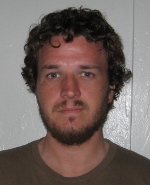

Jason Bennett
University of California, Santa Cruz
Research Interests
- Language
- Logic
- Mind
- Epistemology
Info
Department of Philosophy
South Hall 5717
University of California
Santa Barbara, CA 93106- Phone: 805-893-7530
- Fax: 805-893-8221
- http://dedicto.org/
- Office Hours (Winter 2014): T 12:20 -- 2:20 PM
Research Abstract
I received my B.A. and M.A. degrees in philosophy from UCSC, spending the second year of my masters program at Berkeley under the UC intercampus exchange program. My thesis was largely a defense of a posteriori physicalism from the well known attacks of Putnam and Nagel.
My main interests lie within the overlap between philosophy of language and logic, with the liar paradox being something of a splinter in my mind as of late. More generally, I am interested in the limits of linguistic expression, which I see as restricted by logical space, which is in turn restricted by ontology. That is, roughly and crudely, I don’t think it is possible to say anything that is literally true (or false) about “things” that don’t exist. In my time here at UCSB I have become increasingly interested in epistemology, largely influenced by the classes I’ve taken with Tony Brueckner and Michael Rescorla. In particular I would like to consider closure more closely.
I started grad school purely due to my love of philosophy, just hoping that I would find teaching tolerable. While working on my M.A. I found that I enjoy teaching even more, mainly for the “Ah-ha!” moments (when something clicks). I liked to TA/teach Logic more than any other class since there are always at least a few struggling yet determined students to work closely with who ultimately they do very well. I enjoyed teaching so much that in the two years before starting PhD program here, I was an instructor at an elementary school in Berkeley (2nd, then followed my class to 3rd grade), and found that even more rewarding. I can almost see myself finishing up my PhD and going back to teach elementary school anyway, but I do so enjoy philosophy as well.
Personal
I am a philosophy robot. Well, okay, I suppose I have other interests. I enjoy the usual things (movies, music, and books), and also like to paint, ride my bike, or just wander around aimlessly while absorbing the scenery. I have also gotten back into video games recently, playing way too much Left 4 Dead 2 as of this writing.